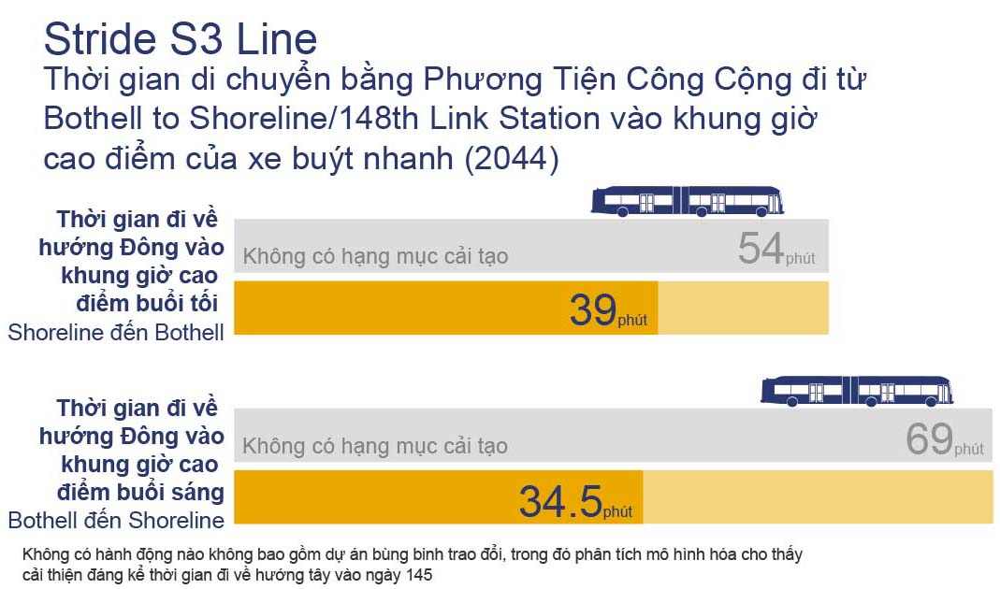

Thời gian tương tác lấy ý kiến cho Lake Forest
Park, Shoreline/Seattle và Kenmore đã kết thúc.
Chúng tôi sẽ tổ chức thêm một buổi nói chuyện
trực tiếp cho Thành Phố Bothell trong khung giờ
từ 3:30 chiều đến 6:30 tối ngày 25 tháng 4 tại
Thư Viện Bothell.
Chào mừng quý vị
Stride sắp ra mắt công chúng!
Trang web tương tác trực tuyến này chia sẻ với mọi
người về những kế hoạch và thông tin cập nhật ở giai
đoạn thiết kế 60%. Chúng tôi vừa hoàn tất giai đoạn
thiết kế 60% cho Bothell.
Chương trình xe buýt nhanh (BRT) Stride được xây
dựng nhằm mục đích mang đến cho quý vị những phương
thức thuận tiện và hiệu quả hơn để di chuyển tới
điểm đến của mình nhờ dịch vụ có tần suất ổn định
mỗi ngày trên toàn khu vực.
Hãy xem video ngắn dưới đây của chúng tôi để bước
đầu nắm bắt thông tin về Stride BRT
Chúng tôi đang tổ chức buổi nói chuyện trực tiếp
theo hình thức cuộc họp công khai để chia sẻ kế
hoạch ở giai đoạn thiết kế 60% cho Bothell. Hãy
tham gia cuộc họp để tìm hiểu thêm về nội dung
thiết kế trong thành phố của quý vị, đưa ra câu
hỏi và chia sẻ suy nghĩ của quý vị về công tác
xây dựng trong tương lai.
Ngày 25 tháng 4
Bothell
3:30 chiều – 6:30 tối
Thư Viện Bothell
Dịch vụ xe buýt nhanh Stride của Sound Transit
sẽ đáp ứng các tiêu chí gồm nhanh chóng, có tần
suất ổn định và đáng tin cậy, giúp kết nối với
đường sắt nhẹ cũng như các cộng đồng ở khu vực
phía bắc, phía đông và phía nam Hồ Washington.
Tương tự như dịch vụ đường sắt nhẹ, Stride hướng
tới mục tiêu giúp mọi người đi lại thuận tiện
với thời gian đến và đi nhanh chóng, bao gồm
phương thức thanh toán giá vé trước khi lên xe
cũng như lên và xuống xe qua nhiều cửa xe buýt.
Các làn đường xe buýt mới và hạng mục cải tạo ưu
tiên cho phương tiện công cộng giúp hành khách
tránh lưu lượng giao thông đông đúc. Đội xe buýt
Stride của chúng tôi sẽ bao gồm xe buýt điện
chạy bằng pin (BEB) để cung cấp một phương thức
đi lại sạch sẽ và bền vững hơn trong khu vực.
Các tuyến đường của Stride sẽ thay thế dịch vụ
ST Express hiện đang được các đối tác vận chuyển
vận hành. Tuyến Đường 560 sẽ được thay thế bằng
tuyến S1: I-405 Hướng Phía Nam; Tuyến Đường 535
sẽ được thay thế bằng tuyến S2: I-405 Hướng Phía
Bắc; và Tuyến Đường 522 sẽ được thay thế bằng
tuyến S3. Xe buýt Stride sẽ kết nối với hệ thống
Link Light Rail và cung cấp cho quý vị những
phương thức mới để đi tới điểm đến của mình.
Chương trình Stride của chúng tôi cũng sẽ bao
gồm một cơ sở bảo trì xe buýt mới ở Bothell nhằm
đảm bảo hành khách sử dụng dịch vụ của Sound
Transit có một chuyến đi an toàn, sạch sẽ và
thoải mái. Các tuyến xe buýt S1, S2 và S3 kết
hợp tạo nên chương trình Stride.
Tuyến S1 và Tuyến S2 là gì?
Trước đây trong giai đoạn quy hoạch của dự án,
Tuyến S1 và Tuyến S2 của Stride được gọi là
tuyến xe buýt nhanh I-405 và sẽ kết nối các cộng
đồng dọc theo tuyến I-405 và SR 518 từ Lynnwood
đến Burien. Tuyến S1 chạy từ Burien đến Bellevue
và Tuyến S2 chạy từ Bellevue đến Lynnwood. Với
các xe buýt chạy thường xuyên với tần suất 10
phút một chuyến, dịch vụ mới này sẽ kết nối với
hệ thống Link light rail tại Lynnwood, Bellevue
và Tukwila, tuyến S3 của Stride ở Bothell và các
dịch vụ vận chuyển khác do Sound Transit,
Community Transit và King County Metro cung cấp.
Dự án này bao gồm một điểm trung chuyển mới ở
South Renton và 10 trạm của Stride, trong số đó
sẽ có ba điểm được bổ sung bãi đỗ xe với tổng
1,300 chỗ để xe mới. Bãi đỗ xe tại Điểm Trung
Chuyển South Renton và bãi đỗ xe tại Northeast
44th Street dự kiến sẽ hoàn thành vào năm 2034.
Trạm Totem Lake/Kingsgate ở Kirkland dự kiến sẽ
hoàn thành vào năm 2035. Tuyến S1 và Tuyến S2
được xây dựng theo Kế Hoạch Tổng Thể I-405 của
Sở Giao Thông Vận Tải Tiểu Bang Washington
(WSDOT) với các hạng mục cải tạo lòng đường để
đi lại nhanh hơn. Chúng tôi đang hợp tác với
WSDOT để thiết kế và xây dựng một số trạm của
Stride dọc theo những tuyến dịch vụ này.
Tuyến S1 và Tuyến S2 sẽ giúp quý vị tiết kiệm
thời gian đi lại
Tuyến S3 là gì?
Trước đây, Tuyến S3 của Stride được gọi là tuyến
xe buýt nhanh SR 522/NE 145th và sẽ phục vụ các
cộng đồng đang phát triển ở phía bắc Hồ
Washington, từ Shoreline và Seattle đến Bothell.
Dự án này bao gồm 14 trạm của Stride. Tuyến S3
sẽ kết nối hành khách với hệ thống Link light
rail tại Shoreline South/148th ở đầu phía tây
của hành lang và ở đầu phía đông của hành lang
đi tuyến S2 ở Bothell. Tuyến S2 và Tuyến S3 sẽ
kết nối tại Điểm Trung Chuyển SR 522/I-405 cùng
dịch vụ vận chuyển do Sound Transit, Community
Transit và King County Metro cung cấp. Stride sẽ
bổ sung bãi đỗ xe ở Kenmore và Bothell, dự kiến
hoàn thành vào năm 2034; và bãi đỗ xe ở Lake
Forest Park, dự kiến hoàn thành vào năm 2044.
Tuyến S3 sẽ giúp quý vị giảm thời gian đi lại
bằng phương tiện công cộng

Đội Xe Buýt Stride
Quý vị có thể nhận ra xe buýt Stride nhờ các màu
xanh dương, vàng và trắng trên xe. Thương hiệu
Stride sẽ giúp quý vị dễ dàng nhận diện đội xe.
Chúng tôi sẽ cung cấp một đội xe buýt hai tầng
dành cho Tuyến S1 và Tuyến S2 cũng như một đội
xe buýt nối toa dành cho Tuyến S3. Stride cũng
sẽ ra mắt một đội xe buýt điện chạy bằng pin
hoàn toàn mới. Hãy xem trước mẫu thiết kế xe
buýt dưới đây:
Tham gia khảo sát của chúng tôi
Chúng tôi muốn lắng nghe ý kiến từ quý vị trong
quá trình chuẩn bị cho công tác xây dựng tại khu
phố của quý vị.
Nếu ngôn ngữ của quý vị chưa được hỗ trợ, vui
lòng liên hệ theo số 1-800-201-4900/Dịch Vụ Tiếp
Âm TTY, vui lòng gọi 711 hoặc gửi email đến địa
chỉ
accessibility@soundtransit.org
để nhận định dạng thay thế.
Đăng ký để nhận bản tin về dự án
Nhận bản tin sắp tới về dự án và có cơ hội tham
gia với cộng đồng
Stride sẽ kết nối các cộng đồng ở khu
vực phía đông, phía bắc và phía nam Hồ
Washington
Thông Tin Cơ Bản
Stride đã đạt được các mốc thành tựu đáng chú ý kể từ
giai đoạn quy hoạch
Các dự án của chúng tôi đạt được những dấu mốc quan
trọng khác nhau – thiết kế hoàn thiện 30%, 60% và 90% –
trong giai đoạn thiết kế liên quan đến "mức độ hoàn
thiện" thiết kế chung. Giai đoạn thiết kế 30% hoàn
thành vào năm 2021 và 2022 và chương trình Stride hiện
đang ở giai đoạn thiết kế 60%. Ở giai đoạn thiết kế cuối
cùng, các kế hoạch sẽ được thông qua lần cuối và sẵn
sàng cho công tác xây dựng.
Chúng tôi dự kiến khởi công vào năm 2024/2025 và bắt đầu
cung cấp dịch vụ trên một số tuyến ngay từ năm
2026/2027.
Nằm trong dự luật Sound Transit 3 được cử tri
phê duyệt năm 2016, chương trình Stride sẽ cung
cấp dịch vụ vận chuyển đáp ứng các tiêu chí gồm
nhanh chóng, có tần suất ổn định và đáng tin cậy
cho người dân sinh sống và làm việc dọc theo
tuyến I-405 và SR 522. Các điểm kết nối mới của
Stride từ Bellevue đến Burien, Lynnwood đến
Bellevue cũng như từ Shoreline và Seattle đến
Bothell được xây dựng theo cam kết của Sound
Transit về dịch vụ vận chuyển công bằng, dễ tiếp
cận và có giá cả hợp lý. Với sự gia tăng dân số
dự kiến trên toàn Puget Sound, Stride đảm nhiệm
công tác phục vụ 19 giờ/ngày để đáp ứng các nhu
cầu vận chuyển của nhiều người hơn và kết nối
khu vực này bằng những phương thức mới và nhanh
chóng hơn. Quý vị không cần phải xem lịch trình
xe buýt Stride bởi vì xe buýt sẽ chạy với tần
suất từ 10 đến 15 phút một chuyến. Do đó, mọi
người có thể đi lại dễ dàng thay cho việc lái xe
trên những con đường tắc nghẽn, tránh lưu lượng
giao thông đông đúc trên tuyến I-405 ở những làn
thu phí Cao Tốc và xây dựng các làn phục vụ
Phương Tiện Công Cộng và Tiếp Cận Cơ Sở Kinh
Doanh (BAT) trên tuyến SR 522. Ngoài việc tích
hợp với dịch vụ Sound Transit Link, các tuyến
của Stride sẽ phối hợp với đối tác trong khu vực
để cung cấp nhiều dịch vụ hơn. Stride có các
điểm kết nối với đường sắt nhẹ có thể đưa quý vị
đến xem một trận đấu của đội Mariners hoặc đến
Sân Bay Sea-Tac và cuối cùng là đến tận Everett
hoặc Tacoma. Tuyến S3 có trạm dừng dọc theo
đường mòn Burke-Gilman, vì vậy quý vị có thể đi
bộ ngắm cảnh hoặc đạp xe đến các trạm của
Stride.
Đối mặt với đại dịch và áp lực chi phí tăng mạnh
trên toàn khu vực Puget Sound, Ban Quản Trị
Sound Transit đã triển khai hành động vào tháng
8 năm 2021 để đảm bảo chương trình mở rộng
phương tiện công cộng do cử tri chấp thuận luôn
giữ mức giá hợp lý.
Công tác quan trọng này đã giải quyết cách biệt
về khả năng chi trả ước tính $6.5 tỷ để thực
hiện các dự án theo lịch trình trước đó do chi
phí xây dựng và bất động sản trong khu vực làm
tăng ước tính ngân sách cho dự án trong tương
lai.
Sau 17 tháng phân bổ nhân sự và thảo luận với
Ban Quản Trị, cùng với sự tham gia của các cơ
quan có thẩm quyền và bên liên quan, Ban Quản
Trị đã thông qua kế hoạch tái điều chỉnh vào
ngày 5 tháng 8 năm 2021. Tìm hiểu thêm về hành
động của Ban Quản Trị trong
bài đăng trên blog Nền Tảng
của chúng tôi.
Dựa trên dự báo doanh thu và ước tính chi phí
hiện tại, kế hoạch được Ban Quản Trị thông qua
xác định:
2026/2027 là khung thời gian mà chúng tôi sẽ
có đủ khả năng để bắt đầu phục vụ dự án BRT
SR 522/NE 145th (Tuyến S3 của Stride).
2026/2027 là khung thời gian mà chúng tôi sẽ
có đủ khả năng để bắt đầu cung cấp dịch vụ
trên tuyến xe buýt nhanh Stride ở phía nam,
từ Burien đến Bellevue (Tuyến S1) và hoàn
thành công tác xây dựng Trạm NE 85th ở tuyến
phía bắc.
2026/2027 là khung thời gian mà chúng tôi sẽ
có đủ khả năng để bắt đầu cung cấp dịch vụ
trên tuyến phía bắc, từ Bellevue đến
Lynnwood (Tuyến S2). Thời gian bắt đầu cung
cấp dịch vụ này cũng được phối hợp với Dự Án
Cải Tạo Tuyến I-405, từ Brickyard đến SR 527
của WSDOT.
2034 là khung thời gian mà chúng tôi sẽ có
đủ khả năng bổ sung bãi đỗ xe ở Kenmore và
Bothell.
2044 là khung thời gian mà chúng tôi sẽ có
đủ khả năng bố trí bãi đỗ xe ở Lake Forest
Park.
2034 là khung thời gian mà chúng tôi sẽ có
đủ khả năng bố trí bãi đỗ xe tại NE 44th ở
Renton và Điểm Trung Chuyển South Renton.
2035 là khung thời gian mà chúng tôi sẽ có
đủ khả năng bổ sung bãi đỗ xe tại Kingsgate
ở Kirkland.
Chi phí của dự án đang được theo dõi sát sao
trong quá trình hợp tác với các cơ quan đối tác
có thẩm quyền và bên liên quan nhằm thúc đẩy các
dự án của Stride. Các mốc thời gian cuối cùng
của dự án sẽ được chú trọng hơn khi chúng tôi
đẩy mạnh thiết kế dự án và thu mua lại bất động
sản, bao gồm cả việc thẩm tra các phương án tiết
kiệm chi phí.
Chúng tôi sẽ nỗ lực và quyết tâm đảm bảo mở rộng
nguồn kinh phí tài trợ để định hình phương hướng
hành động sau này. Việc phối hợp chặt chẽ với
các đối tác là điều cốt yếu để thực hiện dự án
nhanh nhất có thể.
Tìm hiểu thêm về quy trình tái điều chỉnh và ước
tính chi phí xây dựng gia tăng tại
soundtransit.org/realignment.
Sound Transit đã hoàn thành danh sách kiểm tra
tác động đối với môi trường theo Đạo Luật về
Chính Sách Môi Trường của Tiểu Bang (SEPA) cho
các dự án của Stride, bao gồm tuyến BRT I-405,
tuyến BRT SR 522 và cơ sở hoạt động và bảo trì
Bus Base North. Dựa trên danh sách kiểm tra này
cùng với báo cáo kỹ thuật và các thông tin khác,
Sound Transit đã xác định rằng các dự án của
Stride không có tác động bất lợi đáng kể tiềm ẩn
nào đối với môi trường và ban hành Thông Báo
Quyết Định về Tác Động Không Đáng Kể (DNS) cho
từng dự án.
Sound Transit tiếp tục theo dõi thiết kế dự án
để nắm những thay đổi đối với tác động môi
trường được ghi lại theo quy trình SEPA, cũng
như nhu cầu đánh giá bổ sung có thể cần áp dụng
cho các tác động và biện pháp giảm thiểu.
Cảm ơn quý vị đã liên tục đóng góp ý kiến và
phản hồi cho chúng tôi. Ý kiến của quý vị giúp
chúng tôi hiểu rõ hơn về cộng đồng mà chúng tôi
phục vụ. Kể từ năm 2018, chúng tôi đã gặp gỡ
khoảng 80 tổ chức cộng đồng, 130 chủ sở hữu bất
động sản và hàng nghìn thành viên từ cộng đồng
tại các sự kiện ở địa phương. Một số chủ đề phổ
biến chúng tôi nắm được từ công chúng là các câu
hỏi và ý kiến đóng góp xoay quanh mốc thời gian
của dự án, lịch trình xây dựng trong tương lai,
thiết kế và ảnh hưởng của dự án, cũng như thiết
kế và địa điểm của trạm. Nội dung tóm tắt về
những nỗ lực tiếp cận cộng đồng trước đây được
đăng tải trên các trang web dự án của chúng tôi
trong mục tài liệu.
Vì quá trình thiết kế không ngừng tiến triển, chúng tôi
đang tiếp tục tổ chức các buổi đối thoại về kế hoạch cho
từng địa điểm và giải đáp những câu hỏi liên quan đến dự
án. Chúng tôi đã liên hệ với các chủ sở hữu bất động sản
cá nhân để bắt đầu quá trình thu mua lại bất động sản từ
tháng 9 năm 2021 đến tháng 2 năm 2023.
Đội ngũ thực hiện dự án đã tích cực
tương tác với các chủ sở hữu bất
động sản có thể chịu ảnh hưởng từ dự
án ngay từ đầu quá trình thiết kế.
Theo từng giai đoạn, chúng tôi đã
mời các chủ sở hữu bất động sản ở
Seattle, Shoreline, phía đông của
tuyến SR 522 ở Lake Forest Park,
phía tây của tuyến SR 522 ở Lake
Forest Park, Kenmore và Bothell tham
gia thảo luận cụ thể về mức độ tác
động của dự án đối với bất động sản
của họ, đồng thời giải đáp những câu
hỏi liên quan đến dự án từ tháng 1
năm 2020 đến tháng 8 năm 2021. Các
cuộc họp trực tiếp với chủ sở hữu
bất động sản đã được chuyển sang
hình thức trực tuyến do các khuyến
nghị giãn cách xã hội vì COVID-19.
Chúng tôi đã thông báo cho các chủ
sở hữu bất động sản về những cơ hội
khác để tương tác với dự án và nhận
thông tin dự án qua thư, email, cũng
như nắm được thông tin cập nhật về
dự án.
Vào tháng 3 năm 2021, dự án đạt mốc
thiết kế 30% và đội ngũ thực hiện dự
án đã tổ chức sự kiện giới thiệu
trực tuyến cũng như các buổi đối
thoại trực tuyến giữa công chúng và
đội ngũ viên chức của Sound Transit
để chia sẻ thông tin thiết kế mới
nhất. Dựa trên ý kiến phản hồi từ
các chủ sở hữu bất động sản, công
tác điều chỉnh tuyến đường ở Lake
Forest Park đã được chuyển sang khu
vực phía tây của tuyến SR 522 để
giảm thiểu số lượng chủ sở hữu bất
động sản phải di dời.
Đội ngũ thực hiện dự án tiếp tục
giải đáp những câu hỏi liên quan đến
dự án từ các chủ sở hữu bất động sản
và các nhóm dân cư trong khu phố,
đồng thời gặp gỡ họ theo yêu cầu
trong quá trình thay đổi kế hoạch
thiết kế.
Đội ngũ thực hiện dự án đã tích cực
tương tác với các chủ sở hữu bất
động sản có thể chịu ảnh hưởng từ dự
án ngay từ đầu quá trình thiết kế.
Chúng tôi đã mời các chủ sở hữu bất
động sản tham gia họp nếu họ chịu
ảnh hưởng từ dự án. Do đại dịch, các
cuộc họp tương tác với chủ sở hữu
bất động sản đã được chuyển sang
hình thức trực tuyến. Dự án đã được
Ban Quản Trị Sound Transit cấp Giấy
Xác Nhận Dân Sự vào tháng 6 năm
2022.
Sound Transit đã thay đổi thiết kế
của chương trình Stride để giảm
thiểu số lượng chủ sở hữu bất động
sản phải di dời. Bên cạnh đó, phần
lớn bất động sản chịu tác động nằm
trong chương trình chỉ liên quan đến
việc thu mua lại một phần bất động
sản và quyền địa dịch tạm thời. Tuy
nhiên, trong một số ít trường hợp,
tác động của dự án đối với bất động
sản cụ thể lớn đến mức khiến chủ sở
hữu/người thuê nhà có thể sẽ phải
chuyển đi trong quá trình này. Nếu
xảy ra trường hợp đó, các cá nhân
hoặc cơ sở kinh doanh phải chuyển đi
có quyền được hỗ trợ di dời và nhận
các khoản thanh toán được cấp theo
Đạo Luật Thống Nhất về Các Chính
Sách Hỗ Trợ Di Dời và Thu Mua Lại
Bất Động Sản năm 1970 (sau đây gọi
là Đạo Luật Thống Nhất).
Bất kỳ cá nhân nào thuộc diện phải
chuyển đi sẽ được Sound Transit
thông báo đầy đủ về các quyền và
quyền lợi pháp lý liên quan đến công
tác hỗ trợ di dời và các khoản thanh
toán được cấp theo Đạo Luật Thống
Nhất. Dịch Vụ Tư Vấn Hỗ Trợ Di Dời
sẵn sàng hỗ trợ bất kỳ cá nhân hoặc
cơ sở kinh doanh nào phải chuyển đi.
Nhân Viên Tái Định Cư từ Sound
Transit sẽ được chỉ định hỗ trợ cá
nhân hoặc cơ sở kinh doanh phải
chuyển đi. Nhân viên này sẽ túc trực
để thảo luận về thủ tục di dời và
giải đáp các câu hỏi.
Tiết kiệm thời gian và năng lượng nhờ
tránh lưu lượng xe ô tô tham gia giao
thông dọc theo tuyến I-405 và SR 522
Mở rộng khả năng tiếp cận phương tiện
công cộng và điểm kết nối với nhiều cộng
đồng đa dạng và đang phát triển
Tạo các điểm kết nối mới với đường sắt
nhẹ, King County Metro và Community
Transit
Sử dụng dòng xe buýt điện chạy bằng pin
đầu tiên của Sound Transit, giảm tác
động đến chất lượng không khí
Giúp quý vị lên xe dễ dàng và nhanh
chóng nhờ phương thức thanh toán trước
khi lên xe và xe có nhiều cửa lên xuống
Sử dụng Làn Thu Phí Cao Tốc cũng như Làn
BAT mới và hiện có để tránh tắc nghẽn và
cải thiện độ tin cậy của phương tiện
công cộng
Mang đến một lựa chọn thay thế cho các
phương tiện chở một người
Đưa các trạm có mái tránh trú thời tiết
và biển báo rõ ràng vào dự án
Cải tạo đường dành cho người đi bộ đến
các trạm
Cập Nhật Thiết Kế
Tìm hiểu về kế hoạch thiết kế mới nhất của Stride cho
khu vực của quý vị
Để đạt được mốc thiết kế 60%, chúng tôi đã tiếp tục tổ
chức các buổi đối thoại với các cơ quan có thẩm quyền và
cộng đồng dọc hành lang để đảm bảo dự án đáp ứng được
các yêu cầu về mã số đường cũng như nhu cầu của cư dân
và hành khách. Chúng tôi sẽ tiếp tục hợp tác với các cơ
quan có thẩm quyền và chủ sở hữu bất động sản để thay
đổi các thiết kế. Trong mỗi mục, quý vị có thể tìm thấy
thông tin cập nhật thiết kế và các sơ đồ dạng cuộn dài
nếu có.
Xuyên suốt chương trình Stride đã có những thay
đổi mới về thiết kế, bao gồm:
Cải tạo đường dành cho người đi bộ, có vỉa
hè và hệ thống chiếu sáng mới.
Ra mắt nhóm xe buýt điện chạy bằng pin đầu
tiên của Sound Transit. Các trạm sạc sẽ được
bổ sung ở mỗi bến cuối cho tất cả các tuyến
Stride.
Có tổng cộng hơn 40 trạm BRT dọc theo các
tuyến S1, S2 và S3. Mái che thường sẽ dài 48
foot và hầu hết sẽ có máy bán vé tự động,
máy đọc thẻ ORCA và biển thông tin.
Thay đổi thiết kế để tạo ra các trạm lớn
hơn, dễ tiếp cận hơn đáng kể xuyên suốt
Tuyến S3.
Một phần chương trình Stride đang được các thành
phố và cơ quan đối tác địa phương của chúng tôi
thiết kế và thi công. Sở Giao Thông Vận Tải Tiểu
Bang Washington, các Thành Phố như Bothell,
Shoreline, Kirkland và Renton, cũng như Đại Học
Washington Bothell là một số đối tác trọng yếu
đang thi công các yếu tố bộ phận của Stride. Đối
tác của chúng tôi sẽ đóng góp vào sự thành công
của chương trình xe buýt nhanh Stride.
Bus Base North sẽ bổ sung một tòa nhà mới phục
vụ hoạt động vận hành và bảo trì xe buýt và một
công trình đỗ xe cho xe buýt và các phương tiện
khác. Giai đoạn thiết kế đã hoàn thành 30% và
còn 60% đang được tiến hành.
Thiết kế bao gồm:
Một khu đất rộng 2,5 mẫu Anh nằm trong Trung
Tâm Kinh Doanh Canyon Park trên 20th Avenue
Southeast.
Một tòa nhà hai tầng về Hành Chính và Vận
Hành, một tòa nhà Bảo Trì Phương Tiện Xe
Buýt, Chỗ Để Xe Buýt và trạm sạc pin cho xe
buýt điện cùng bãi đỗ xe dành cho nhân viên
ở phía trên.
Che chắn ngăn cách bằng cảnh quan cây xanh
xung quanh cơ sở.
Sẽ kết hợp tác phẩm nghệ thuật vào trong cơ
sở, ở những vị trí mà công chúng có thể nhìn
thấy.
Cơ sở Bus Base North sẽ đảm bảo thực hiện vệ sinh và
bảo trì xe buýt Stride thường xuyên
Bản Đồ Bus Base North
Dưới đây, quý vị sẽ tìm thấy thông tin cập nhật
thiết kế theo từng thành phố.
Cập Nhật Thiết Kế Cho Tuyến S1
Tuyến S1 sẽ có một trạm tại Điểm Trung Chuyển
Burien (Southwest 148th Street và First Avenue
South) ở Burien.
Những thay đổi kế hoạch thiết kế bao gồm:
Điều chỉnh đảo chờ phía tây nằm trong điểm
trung chuyển để phục vụ cho trạm Stride
trong tương lai.
Cải tạo lòng đường nhằm thêm một làn đường
dành riêng cho xe buýt dọc theo Southwest
148th Street, kết nối với tuyến SR 518 để
phục vụ các hoạt động vận hành của Stride.
Ảnh kết xuất trạm Stride tại Điểm Trung Chuyển
Burien
Trạm Tukwila International Boulevard (tuyến SR
518 và Tukwila International Boulevard) sẽ phục
vụ Tukwila và SeaTac. Nhờ hợp tác với WSDOT,
tuyến S1 sẽ có một trạm Stride cao tốc mới trên
tuyến SR 518. Hành khách sẽ có thể kết nối với
dịch vụ đường sắt nhẹ hiện có thông qua cầu dành
cho người đi bộ mới. Điều này sẽ giúp hành khách
Stride BRT muốn đi đến sân bay hoặc Seattle có
thể di chuyển dễ dàng.
Những thay đổi kế hoạch thiết kế bao gồm:
Những thay đổi kế hoạch thiết kế chung đối
với thiết kế của trạm.
Cải thiện các dịch vụ tiện ích, hệ thống
thoát nước mưa và đèn điện tại các đảo chờ
Stride.
Cải tạo kiến trúc trạm để bao gồm các yếu tố
bộ phận của Stride.
Trạm Tukwila Boulevard sẽ có các cặp trạm Stride
Tuyến S1 sẽ bao gồm hai trạm ở Renton: Trạm
Northeast 44th (tuyến I-405 và NE 44th Street)
và Điểm Trung Chuyển South Renton (Rainer Avenue
South và South Grady Way). Trạm Stride NE 44th
sẽ được bàn giao như một phần trong dự án Renton
đến Bellevue của WSDOT.
Những thay đổi kế hoạch thiết kế bao gồm:
Một bãi đỗ xe trên mặt đất tại Điểm Trung
Chuyển South Renton (sẽ được thay bằng nhà
đậu xe năm tầng trong tương lai).
Hai đảo chờ xe buýt bao gồm tám bến xe buýt,
hầu hết đều có mái che, phục vụ chương trình
Stride của Sound Transit, dịch vụ RapidRide
của King County Metro và xe buýt địa phương
tại Điểm Trung Chuyển South Renton.
Cơ sở hạ tầng để sạc pin cho xe buýt điện
Stride và King County Metro tại điểm trung
chuyển.
Một giao lộ ngã tư mới có đèn tín hiệu được
xây dựng trên Rainier Avenue South và Hardie
Avenue Southwest để hỗ trợ các hoạt động của
xe buýt.
Các hạng mục cải tạo nâng cao an toàn cho
người đi bộ như vỉa hè và hệ thống chiếu
sáng mới tại điểm trung chuyển.
Công tác xây dựng thực hiện dọc theo tuyến
SR 167 để bổ sung làn đường dành cho xe buýt
gần các làn ra vào cao tốc trên tuyến I-405
nhằm hỗ trợ các hoạt động của Stride.
Bãi Đỗ Xe Trung Chuyển Renton sẽ có hai đảo chờ
Stride.
Tuyến S1 và tuyến S2 sẽ có một trạm Stride tại
Điểm Trung Chuyển Bellevue trên Northeast 6th
Street và 110th Avenue Northeast. Hành khách sẽ
có thể kết nối với xe buýt địa phương và xe buýt
tốc hành, dịch vụ RapidRide của King County
Metro và hệ thống Link light rail tại trạm trung
tâm thành phố Bellevue. Các tuyến Stride bắc và
nam, hay tuyến S1 và tuyến S2, sẽ kết nối tại
trạm này.
Những thay đổi kế hoạch thiết kế bao gồm:
Công tác xây dựng tại Điểm Trung Chuyển
Bellevue để chuẩn bị lắp đặt các yếu tố bộ
phận của trạm Stride như mái che, cột báo
hiệu và biển báo. Cột báo hiệu là cột lớn để
đánh dấu trạm giúp quý vị xác định được
Stride dễ dàng hơn.
Công tác xây dựng thực hiện dọc theo 110th
Avenue Northeast và Northeast 12th Street để
bổ sung các bến nghỉ cho xe buýt Stride. Bến
nghỉ cho xe buýt là khu vực xe buýt có thể
dừng một lúc trước khi bắt đầu chuyến tiếp
theo, để người điều khiển xe buýt có thời
gian nghỉ ngơi. Xe buýt điện cũng sẽ có thể
sạc pin tại khu vực này.
Điểm Trung Chuyển Bellevue sẽ có một trạm Stride
mới
Đoạn tuyến S2 sẽ bao gồm hai trạm ở Kirkland:
Trạm Totem Lake/Kingsgate (tuyến I-405 và
Northeast 128th Street) và Trạm Northeast 85th
(tuyến I-405 và Northeast 85th Street). Cùng với
WSDOT, chúng tôi đang xây dựng Trạm Northeast
85th Street.
Những thay đổi kế hoạch thiết kế bao gồm:
Một nút giao lập thể ba tầng mới tại
Northeast 85th Street với một trạm BRT nội
tuyến trên tuyến I-405 và lối vào các Làn
Thu Phí Cao Tốc.
Công tác "tân trang" và xây dựng
nhỏ sẽ bổ sung cơ sở hạ tầng cần thiết cho
các trạm BRT hiện có và trạm Totem
Lake/Kingsgate nhằm kết hợp các yếu tố bộ
phận của trạm Stride và dịch vụ xe buýt.
Đoạn tuyến S2 sẽ có một trạm tại Trạm Trung Tâm
Thành Phố Lynnwood (200th Street Southwest và
48th Avenue West) ở Lynnwood. Trạm Stride này sẽ
liền kề với trạm Lynwood Link light rail trong
tương lai, hiện đang được xây dựng và sẽ bắt đầu
hoạt động vào năm 2024. Đây sẽ là bến cuối của
Tuyến S2.
Những thay đổi kế hoạch thiết kế bao gồm:
Công tác xây dựng thực hiện tại Điểm Trung
Chuyển Lynnwood hiện tại để chuẩn bị cơ sở
và điểm kết nối cho hai trạm xe buýt Stride
BRT mới (điểm đón và trả khách), cũng như
một bến nghỉ cho Stride BRT.
Công tác cải tạo lòng đường và mở rộng xây
dựng trên đoạn làn đi vào cao tốc tuyến I-5
đi về hướng bắc tại Poplar Way, cũng như
đoạn làn đi vào cao tốc tuyến I-5 đi về
hướng nam tại 196th/36th Street. Điều này sẽ
hỗ trợ Stride trong các hoạt động đến và đi
từ Điểm Trung Chuyển Lynnwood.
Ảnh kết xuất trạm Stride tại Điểm Trung Chuyển
Lynnwood trong tương lai
Tuyến S2 kết nối cộng đồng từ Bellevue đến Lynnwood
Bản Đồ Tuyến S2 của Stride
Cập Nhật Thiết Kế Cho Tuyến S3
Đoạn tuyến S3 dọc theo Northeast 145th Street
bao gồm các trạm BRT tại trạm đường sắt nhẹ
Shoreline South/148th, trên Northeast 145th
Street tại 15th Avenue Northeast và 30th Avenue
Northeast. Chúng tôi cũng sẽ tiến hành công tác
mở rộng lòng đường để thi công các làn xe buýt
và vỉa hè mới về hướng tây giữa 8th Avenue
Northeast và 6th Avenue Northeast, cũng như ở cả
hai hướng giữa khoảng 12th Avenue Northeast và
17th Avenue Northeast. Quá trình nâng cấp vỉa hè
cũng sẽ liên quan đến trạm nằm tại 30th Avenue
Northeast.
Những thay đổi kế hoạch thiết kế bao gồm:
Những thay đổi kế hoạch về lòng đường, đường
lái xe cá nhân và vỉa hè/dải trồng cây để
giảm tác động đến bất động sản và cây cối.
Ảnh kết xuất thềm đứng chờ đi về hướng tây
Shoreline/Seattle tại 15th Avenue NE
Đoạn tuyến S3 ở Lake Forest Park bao gồm trạm
BRT trên tuyến 522 tại Northeast 153rd Street,
Northeast 165th Street và Ballinger Way
Northeast. Dự án này cũng bao gồm công tác mở
rộng lòng đường để thi công một làn xe buýt và
vỉa hè mới về hướng bắc trên tuyến SR 522, giữa
ngay ở phía nam của Northeast 147th Street và
41st Avenue Northeast.
Những thay đổi kế hoạch thiết kế nhằm giảm tác động
đến chủ sở hữu bất động sản bao gồm:
Tái sử dụng làn đường hai chiều có cho rẽ
trái hiện tại để giảm bớt ảnh hưởng từ dự
án.
Bổ sung vỉa hè và dải trồng cây ở phía đông
tuyến SR 522 để tạo ra đường dành cho người
đi bộ an toàn.
Hoàn thành hệ thống làn phục vụ phương tiện
công cộng và tiếp cận cơ sở kinh doanh (BAT)
trên Bothell Way để tiết kiệm thời gian cho
hành khách. Làn BAT là làn lề đường chỉ dành
cho xe buýt và phương tiện rẽ phải. Các làn
BAT này hiện đã hoàn thành và đang hoạt
động.
Chuyển sang mở rộng tuyến SR 522 về phía
tây, giúp giảm đáng kể số lượng nhà ở có thể
sẽ phải thu mua lại hoàn toàn và trường hợp
di dời ở phía đông tuyến SR 522.
Di dời một số dịch vụ tiện ích từ khu phía
tây sang khu phía đông.
Cải tạo chiều rộng của vỉa hè và dải trồng
cây để giảm tác động đến cây cối.
Những thay đổi kế hoạch thiết kế khác bao gồm:
Cải tạo thiết kế cơ sở hạ tầng thoát nước
mưa và thiết kế tiện ích.
Hợp tác với Lake Forest Park và WSDOT để cải
thiện các thiết kế tường chắn sao cho hòa
hợp hơn với cộng đồng.
Cải tạo thiết kế đường lái xe cá nhân ở phía
đông tuyến SR 522 để tạo lối vào và lối quay
đầu xe.
Ảnh kết xuất trạm Trung Tâm Thành Phố Lake
Forest Park đi về hướng tây
Đoạn tuyến S3 ở Kenmore bao gồm ba trạm BRT trên
tuyến SR 522 tại 61st Avenue Northeast, 68th
Avenue Northeast và 73rd Avenue Northeast. Đoạn
hành lang này hiện đang có các làn xe buýt, thế
nên dự án này không tính đến công tác mở rộng
lòng đường.
Ảnh kết xuất trạm Stride đi về hướng tây tại
61st Ave NE
Đoạn tuyến S3 ở Bothell sẽ bao gồm năm trạm tại
98th Avenue Northeast và Northeast 182nd Street,
Northeast 185th Street và 104th Avenue
Northeast, UW Bothell/Cao Đẳng
Cascadia-Beardslee Boulevard, Beardslee
Boulevard và Northeast 195th Street, cũng như
Điểm Trung Chuyển SR 522/I-405. Sound Transit và
WSDOT thiết kế nên Điểm Trung Chuyển kết nối
tuyến S2 và tuyến S3, bao gồm một điểm kết nối
an toàn và dễ tiếp cận dành cho người đi bộ.
Điểm này kết nối đến khuôn viên Đại Học
Washington Bothell/Cao Đẳng Cascadia (UWB/CC),
Đường Mòn Sammamish River và Đường Mòn North
Creek.
Tuyến S3 kết nối cộng đồng từ Shoreline đến Bothell
Bản Đồ Tuyến S3 của Stride
Dự Án từ Cơ Quan Đối Tác
Các đối tác của chúng tôi đang thực hiện những gì để
chuẩn bị cho Stride?
Stride sẽ kết nối các thành phố quanh Hồ Washington
với hệ thống Link light rail của Sound Transit trong
khu vực và các dịch vụ vận chuyển khác do King
County Metro và Community Transit cung cấp. Để chuẩn
bị cung cấp dịch vụ Stride trong khu vực, Sound
Transit đang hợp tác với các thành phố và cơ quan
đối tác vận chuyển để cải tạo cơ sở hạ tầng cũng như
điểm kết nối vận chuyển.
Hành khách trên tuyến I-405 giữa Renton và
Bellevue phải đi qua một trong những tuyến đường
đi làm tệ nhất tiểu bang. Dự án Mở Rộng Tuyến
I-405 từ Renton đến Bellevue và Các Làn Thu Phí
Cao Tốc sẽ bao gồm các hạng mục cải thiện mức độ
an toàn và dịch vụ vận chuyển đa phương thức
nhằm mang đến các lựa chọn đi lại đáng tin cậy
hơn, đồng thời giúp tài xế, hành khách sử dụng
phương tiện công cộng và hàng hóa có thể di
chuyển.
Dự án Renton đến Bellevue sẽ bổ sung công suất
mới nhằm tạo ra hệ thống Làn Thu Phí Cao Tốc
(ETL) hai làn giữa tuyến SR 167 ở Renton và
Northeast 6th Street ở Bellevue. Nhìn chung, dự
án sẽ thêm một làn đường mới ở mỗi hướng và kết
hợp làn HOV hiện tại với làn đường mới này để
tạo ra hệ thống ETL kép.
Các ETL mới sẽ kết nối với hệ thống làn thu phí
cao tốc hiện có giữa Bellevue và Lynnwood, cũng
như các làn HOT ở tuyến SR 167 thông qua Tuyến
Nối Trực Tiếp Tại Nút Giao Lập Thể ở tuyến
I-405/SR 167, từ đó tạo ra hệ thống ETL dài 40
dặm. Dự án này được thiết kế nhằm mục đích cải
thiện tốc độ và độ tin cậy của chuyến đi cho tất
cả hành khách, đồng thời hỗ trợ tuyến Xe Buýt
Nhanh (BRT) I-405 mới giữa Lynnwood và Tukwila,
xuất hiện trong gói Sound Transit 3 đã được cử
tri chấp thuận.
Ảnh kết xuất Nút Giao Lập Thể Northeast 44th
Street nằm trong dự án Renton đến Bellevue
Dự Án Cải Tạo Tuyến I-405, từ Brickyard đến SR
527 chủ yếu nằm ở Bothell trên tuyến I-405, bắt
đầu ngay tại phía nam nút giao lập thể ở tuyến
SR 522 và kết thúc tại nút giao lập thể ở tuyến
SR 527. Các cộng đồng trong khu vực lân cận sẽ
chứng kiến những điểm cải tiến quan trọng trong
việc bổ sung công suất cho làn thu phí cao tốc,
kết nối trực tiếp với đường cao tốc của tiểu
bang và cải tạo những điểm kết nối với dịch vụ
vận chuyển trong khu vực tại cả Trạm UW Bothell
(SR 522) và Bãi Đỗ Xe Trung Chuyển Canyon Park
(SR 527), kết hợp các khoản đầu tư dành cho hành
lang với kế hoạch mở Tuyến S2 của Sound Transit.
Trạm Brickyard ở Bothell sẽ là một cơ sở trạm
Stride nội tuyến mới chỉ dành cho phương tiện
công cộng nhằm hỗ trợ tuyến S2 của Stride, cải
thiện những điểm kết nối với bãi đỗ xe trung
chuyển hiện tại.
Dự án sẽ nâng cấp 4,5 dặm hành lang với trọng
tâm là mở rộng dự án chính và cải tạo hoạt động
tổng thể. Dự án này sẽ xây dựng một làn thu phí
cao tốc mới ở mỗi hướng giữa phía nam tuyến SR
522 và tuyến SR 527 (mở rộng hệ thống làn thu
phí kép hiện có), mở rộng tuyến I-405 qua nút
giao lập thể ở tuyến SR 522 và xây dựng dốc kết
nối trực tiếp với các làn thu phí cao tốc tại
tuyến SR 522, đồng thời xây dựng một phần nút
giao lập thể kết nối trực tiếp tại tuyến SR 527
đến và từ phía nam, kết nối với Bãi Đỗ Xe Trung
Chuyển Canyon Park. Dự án cũng sẽ bao gồm các
hạng mục cải tạo lòng đường bổ sung tại địa
phương, sửa chữa hàng rào cá, tường chống ồn và
cơ sở thoát nước mưa mới.
Dự Án Trạm Nội Tuyến và Nút Giao Lập Thể
Northeast 85th Street, Tuyến I-405 được đề xuất
nằm trong Thành Phố Kirkland dọc theo tuyến
Interstate 405 (I-405). Với sự hợp tác của Thành
Phố Kirkland, dự án sẽ thay thế nút giao lập thể
hoa thị hai tầng hiện có tại Northeast 85th
Street bằng một nút giao lập thể ba tầng, đồng
thời xây dựng các hạng mục cải tạo tại địa
phương dọc theo Northeast 85th Street và giao lộ
ở nơi đây cùng 114th Avenue Northeast/Kirkland
Way.
Thành Phố Shoreline đang thiết kế các hạng mục
cải tạo dành cho tuyến SR 523 (N/NE 145th
Street) và nút giao lập thể ở tuyến I-5, bao gồm
NE 145th Street nằm giữa 5th Avenue NE và các
làn ra vào cao tốc ở phía tây tuyến I-5. Dự án
sẽ thay thế các giao lộ có đèn tín hiệu ở hai
bên tuyến I-5 bằng
vòng xuyến
và đổi mới hình dạng làn đường trên cầu bắc qua
tuyến I-5.
Dự Án Nút Giao Lập Thể ở 145th Street và Tuyến
I-5 sẽ cải thiện sự an toàn và khả năng tiếp cận
đa phương thức dọc hành lang 145th Street, giúp
kết nối với Trạm Shoreline South/148th Light
Rail của Sound Transit trong tương lai, dự kiến
đi vào hoạt động trong năm 2024. Các hạng mục
cải tạo nút giao lập thể sẽ giúp giảm tắc nghẽn
giao thông và tăng cường khả năng di chuyển, độ
tin cậy và an toàn của dịch vụ vận chuyển cho
tất cả đối tượng sử dụng, bao gồm cả người đi
bộ, người đi xe đạp, phương tiện công cộng và
hàng hóa.
Ý kiến phản hồi từ quý vị có ý nghĩa rất quan trọng
trong quá trình chúng tôi tiến đến công tác xây
dựng.
Trong quá trình xây dựng, Sound Transit hợp tác với
nhà thầu để đảm bảo rằng các cơ sở kinh doanh và
người dân ở vùng lân cận biết về công tác sắp tới
Các Bước Tiếp Theo
Cập nhật thông tin về Stride
Trong giai đoạn thiết kế sắp tới, đội ngũ thực
hiện dự án sẽ:
Hoàn thiện thiết kế lòng đường và vỉa hè.
Hoàn thiện thiết kế trạm và thêm tác phẩm
nghệ thuật công cộng.
Chuẩn bị cho công tác xây dựng.
Xin giấy phép sử dụng đất, giấy phép môi
trường và giấy phép xây dựng.
Tiếp tục quy trình thu mua lại bất động sản.
Tiếp tục kết nối với công chúng, các nhóm
cộng đồng, cơ sở kinh doanh, quan chức dân
cử để thông báo về kế hoạch thiết kế và xây
dựng.
Nếu quý vị có thắc mắc, vui lòng liên hệ với
đội ngũ thực hiện dự án qua email theo địa
chỉ
brt@soundtransit.org
hoặc qua điện thoại theo số 206-370-5533.
Chúng tôi khuyến khích quý vị đăng ký vào
danh sách nhận email của chúng tôi để theo
dõi thông tin cập nhật trong tương lai.
Tham gia buổi nói chuyện trực tiếp của chúng
tôi tại Bothell để biết thêm thông tin cập
nhật và đưa ra ý kiến phản hồi.
Chúng tôi đang tổ chức các buổi
nói chuyện trực tiếp theo hình
thức cuộc họp công khai để chia
sẻ những kế hoạch ở giai đoạn
thiết kế 60%. Hãy tham gia cuộc
họp trong thành phố của quý vị
để tìm hiểu thêm về nội dung
thiết kế trong thành phố, đưa ra
câu hỏi và chia sẻ suy nghĩ của
quý vị về công tác xây dựng
trong tương lai.
Ngày 25 tháng 4
Bothell
3:30 chiều – 6:30 tối
Thư Viện Bothell
Quý vị muốn tìm hiểu thêm về Stride? Trang
web về tài liệu Stride dành cho tuyến S1, S2
và S3 cung cấp mọi thông tin, từ phân tích
SEPA, bản đồ dự án chi tiết cho đến Hướng
Dẫn Tương Tác Cộng Đồng.
Trang tài liệu
này là nguồn tài nguyên cung cấp thông tin
chi tiết về chương trình Stride cho công
chúng.
Sound Transit cam kết là một người hàng xóm
thân thiện trong quá trình xây dựng. Chúng
tôi sẽ nỗ lực kiểm soát các tác động đối với
cộng đồng xung quanh bằng cách:
Duy trì sự an toàn trong công trường:
Chúng tôi dựng rào chắn tại các khu vực
xây dựng, giữ cho công trường gọn gàng,
tuân thủ các quy định khác về tiếng ồn,
v.v.
Đảm bảo quá trình di chuyển cho mọi
người: Chúng tôi tạo ra các tuyến đường
an toàn dành cho người đi bộ và người đi
xe đạp, thay đổi luồng giao thông để
điều chỉnh phù hợp với các tác động của
công tác xây dựng, đồng thời duy trì khả
năng tiếp cận bất động sản tư nhân và
khu phố tại địa phương.
Bảo vệ môi trường: Chúng tôi đảm bảo
rằng công tác của chúng tôi không có tác
động tiêu cực đến môi trường.
Triển khai chương trình quan hệ cơ sở
kinh doanh: Chúng tôi cung cấp các nguồn
lực giúp cơ sở kinh doanh chuẩn bị cho
công tác xây dựng, chẳng hạn như bộ tài
liệu dành cho các cơ sở kinh doanh của
chúng tôi.
Duy trì đường dây nóng phục vụ công tác
xây dựng 24/7: Chúng tôi sẵn sàng trả
lời các câu hỏi về công tác xây dựng và
lắng nghe các ý kiến về dự án.
Sound Transit có thể yêu cầu các thành phố
và cơ quan đối tác cấp quyền miễn trừ luật
để hoàn thiện công tác ngoài giờ xây dựng
thông thường nhằm phát triển dự án tổng thể.